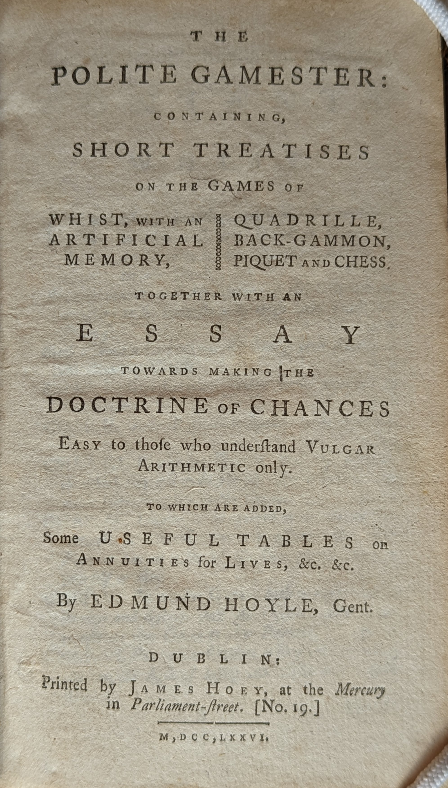
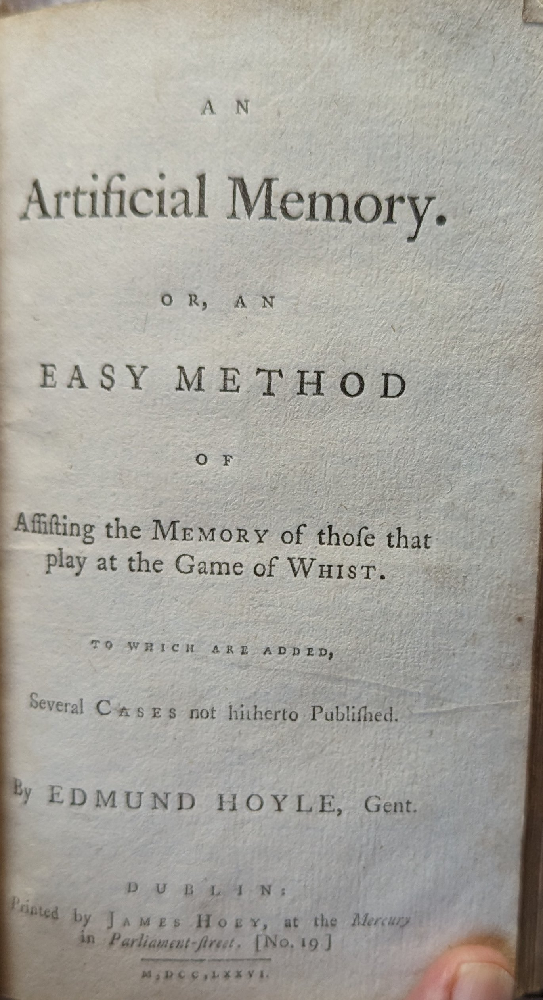
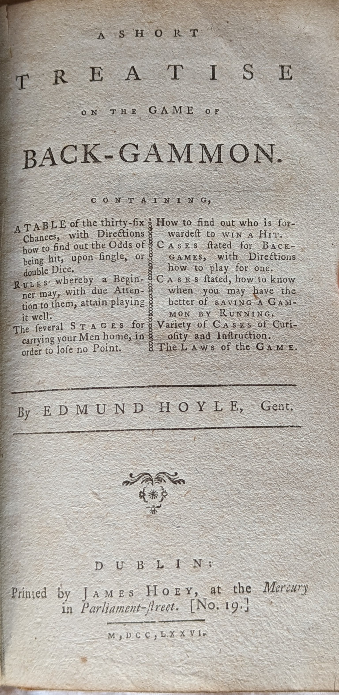
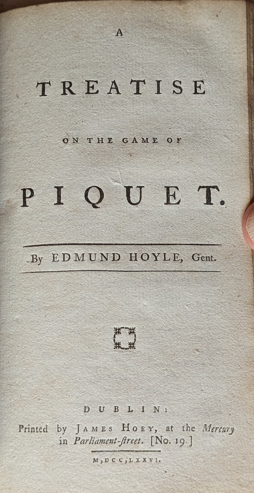
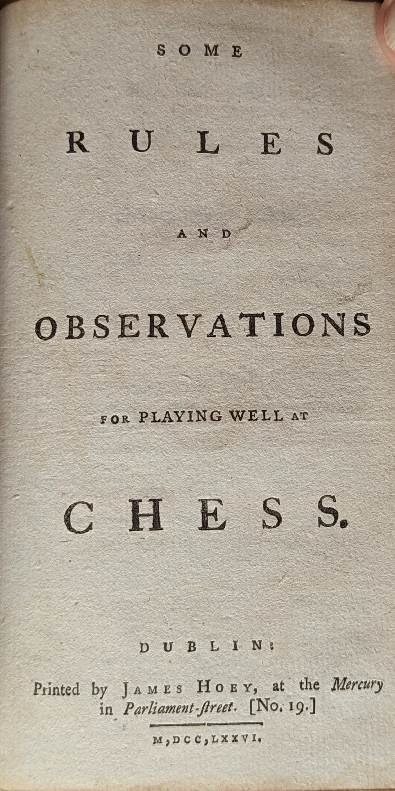
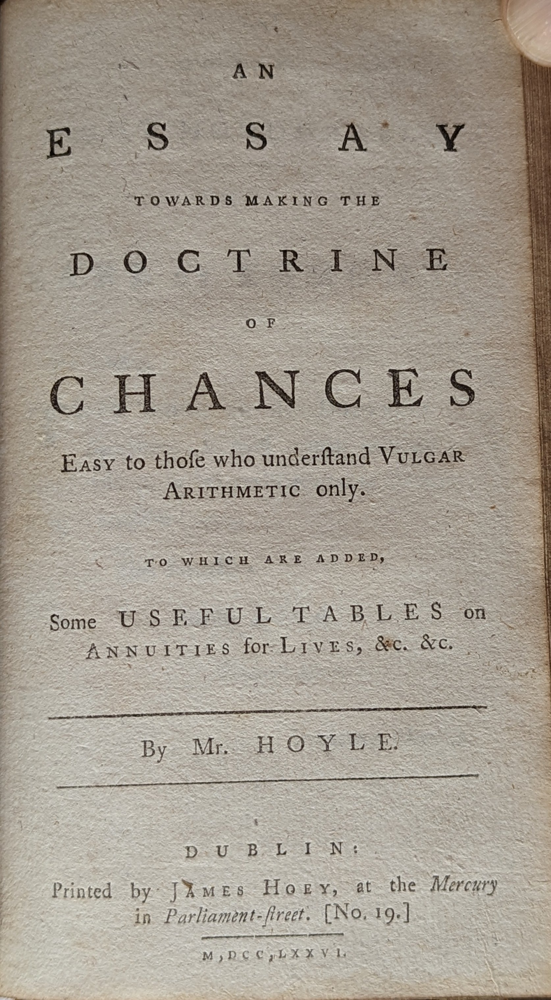

A Descriptive Bibliography of Edmond Hoyle
Copyright © 2014-26 by David Levy
(page updated 2025-04-29)User Guide
Polite.1.2
The Polite Gamester, printed by James Hoey, first Dublin edition, second issue, 1776.
 |
Title: | THE | POLITE GAMESTER: | CONTAINING, | SHORT TREATISES | ON THE GAMES OF | [3 lines to left of line of type orn] WHIST, WITH AN | ARTIFICIAL | MEMORY, | [3 lines to right of line of type orn] QUADRILLE, | BACK-GAMMON, | PIQUET AND CHESS. | TOGETHER WITH AN | ESSAY | TOWARDS MAKING THE | DOCTRINE OF CHANCES | Easy to thoſe who underſtand Vulgar | Arithmetic only. | TO WHICH ARE ADDED, | Some USEFUL TABLES on | Annuities for Lives, &c. &c. | By EDMUND HOYLE, Gent. | DUBLIN: | Printed by James Hoey, at the Mercury | in Parliament-ſtreet. {No. 19.} | [short rule] | M,DCC,LXXVI. |
| Collation: | 12o: π1 A4 B–C12 D12(±D6,11) E12(±E9) F12 G12(±G3) H12(±H5,12) I12 K12(K12+1) [$1–5 (−A3,4,C3,4,5,D3,4,5,E5,G3,H5) signed]; 114 leaves, pp. [10 ] [1] 2–58 [59–61] 62–68 [69–71] 72–88 [89–91] 92–123 [124–127] 128–151 [152–155] 156–166 [167–171] 172–217 [218] |
| Section Title Artifical Memory |  |
AN | Artificial Memory. | OR, AN | EASY METHOD | OF | Aſſiſting the Memory of thoſe that | play at the Game of Whist. | TO WHICH ARE ADDED, | Several Caſes not hitherto Publiſhed. | By EDMUND HOYLE, Gent. | DUBLIN: | Printed by James Hoey, at the Mercury | in Parliament-ſtreet. {No. 19.} | [short rule] | M,DCC,LXXVI. |
| Section Title Backgammon |  |
A SHORT | TREATISE | ON THE GAME OF | BACK-GAMMON. | CONTAINING, | [12 lines to left of rule] A TABLE of the thirty-ſix | Chances, with Directions | how to find out the Odds of | being hit, upon ſingle, or | double Dice. | Rules whereby a Begin-|ner may, with due Atten-|tion to them, attain playing | it well. | The ſeveral Stages for | carrying your Men home, in | order to loſe no Point. | [12 lines to right of rule] How to find out who is for-|wardeſt to win a Hit. | Caſes ſtated for Back-|games, with Directions | how to play for one. | Caſes ſtated, how to know | when you may have the | better of ſaving a Gam-|mon by Running. | Variety of Caſes of Curi-|oſity and Inſtruction. | The Laws of the Game. | [rule] | By EDMOND HOYLE, Gent. | [rule] | [type orns] | DUBLIN: | Printed by James Hoey, at the Mercury | in Parliament-ſtreet. {No. 19.} | [short rule] | M,DCC,LXXVI. |
| Section Title Piquet |  |
A | TREATISE | ON THE GAME OF | PIQUET. | [rule] | By EDMUND HOYLE, Gent. | [rule] | [type orns] | DUBLIN: | printed by James Hoey, at the Mercury | in Parliament-ſtreet. {No. 19.} | [short rule] | M,DCC,LXXVI. |
| Section Title Chess |  |
SOME | RULES | AND | OBSERVATIONS | FOR PLAYING WELL AT | CHESS. | DUBLIN: | Printed by James Hoey, at the Mercury | in Parliament-ſtreet. {No. 19.} | [short rule] | M,DCC,LXXVI. |
| Section Title Doctrine of Chances |  |
AN | ESSAY | TOWARDS MAKING THE | DOCTRINE | OF | CHANCES | Easy to thoſe who underſtand Vulgar | Arithmetic only. | TO WHICH ARE ADDED, | Some USEFUL TABLES on | Annuities for Lives, &c. &c. | [rule] | By Mr. HOYLE. | [rule] | DUBLIN: | Printed by James Hoey, at the Mercury | in Parliament-ſtreet. {No. 19.} | [short rule] | M,DCC,LXXVI. |
| Section Title Quadrille | A SHORT | TREATISE | ON THE GAME OF | QUADRILLE. | SHEWING, | The Odds of winning or loſing moſt Games | that are commonly played; either by calling | a King, or by playing Sans Prendre. | To which are added, | The LAWS of the GAME. | By EDMUND HOYLE, Gent. | DUBLIN: | Printed by James Hoey, at the Mercury | in Parliament-ſtreet. {No. 19.} | [short rule] | M,DCC,LXXVI. |
| Contents: | Signature (Page) Reference | Contents | Signature (Page) Reference | Running Titles |
| π1r | title | |||
| π1v | blank | |||
| A1r–A4v | see Polite.1.1 (1772) | A2v–A4r | see Polite.1.1 (1772) | |
| B1r–D5v (1–58) | see Polite.1.1 (1772) | B1v–D5v (2–58) | see Polite.1.1 (1772) | |
| D6r (59) | section title Artificial Memory | |||
| D6v (60) | blank | |||
| D7r–D10v (61–68) | see Polite.1.1 (1772) | D7v–D10v (62–68) | see Polite.1.1 (1772) | |
| D11r (69) | title page quadrille | |||
| D11v (70) | blank | |||
| D12r–E8v (71–88) | see Polite.1.1 (1772) | D12v–E8r (72–87) | see Polite.1.1 (1772) | |
| E9r (89) | title page backgammon | |||
| E9v (90) | blank | |||
| E10r–G2v (91–124) | see Polite.1.1 (1772) | E10v–G2v (92–124) | see Polite.1.1 (1772) | |
| G3r (125) | section title piquet | |||
| G3v (126) | blank | |||
| G4r–H4v (127–152) | see Polite.1.1 (1772) | G4v–H4r (128–151) | see Polite.1.1 (1772) | |
| H5r (153) | section title chess | |||
| H5v (154) | blank | |||
| H6r–H11v (155–166) | see Polite.1.1 (1772) | H6v–H11v (156–166) | see Polite.1.1 (1772) | |
| H12r (167) | section title doctrine of chances | |||
| H12v (168) | blank | |||
| I1r–K12+1v (169–218) | see Polite.1.1 (1772) | I2v–K12+1r (172–217) | see Polite.1.1 (1772) |
| Publisher: | James Hoey |
| Printer: | Thomas Ewing |
| References: | ESTC T87532, Horr 668, Jessel 814, Rather 56 |
| Copies Seen: | BFl [I.795/HOYL (b1124774)]; D [Dublin1776(20)]; D [J.393.HOY]; D [LO 4437]; Dp [Dublin Collection 795]; L [7921.a.54] (ECCO); O [Jessel f.576]; CLU-C [*GV1241.H86 1776]; NvLN [GV1241.H86 1776]; OCl [789 87H F76D]; PPL [Iu Hoyl Poli Game 1776]; TNJ [GV124.H8P 1776]; Levy [1628] |
| Other Copies: | C [Hib.7.776.16]; NT [SPR]; AMu [OTM: OK 06-1707]; BNF [8-V-13459]; HAG [KW 60 J 111]; Beauchene; CaOHM [RB B11411]; MnU [795.4.H851]; PU [GV1241.H86 1776]; WU [Thordarson T 2007] |